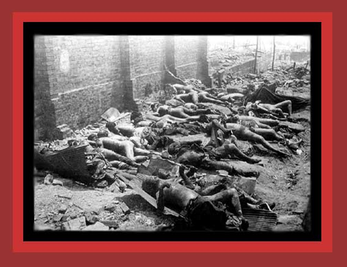

| This is a photograph of more bodies of Japanese the United States murdered by its world War II firebombng of Tokyo. Documentation: Statistics of Democide. Source: Haha to Ko de Miru Tokyo Daikuushuu, Kusanone Publishing Co., 3-4-13 Otsuka Bunkyo-ku, Tokyo, Japan 112-001. Thanks to Ray Wilson for sending me this photo. |